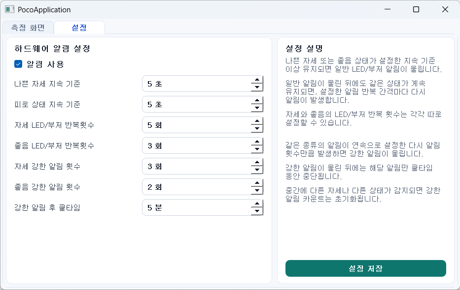
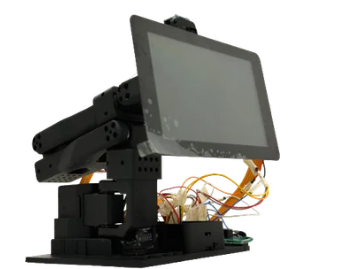
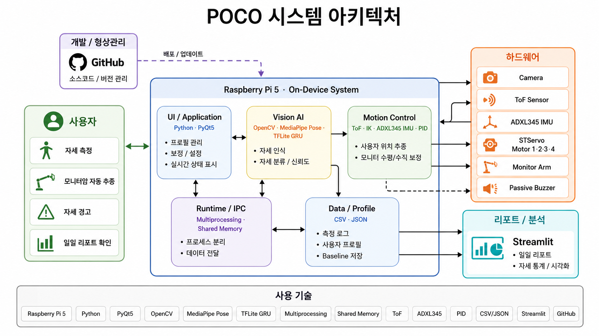
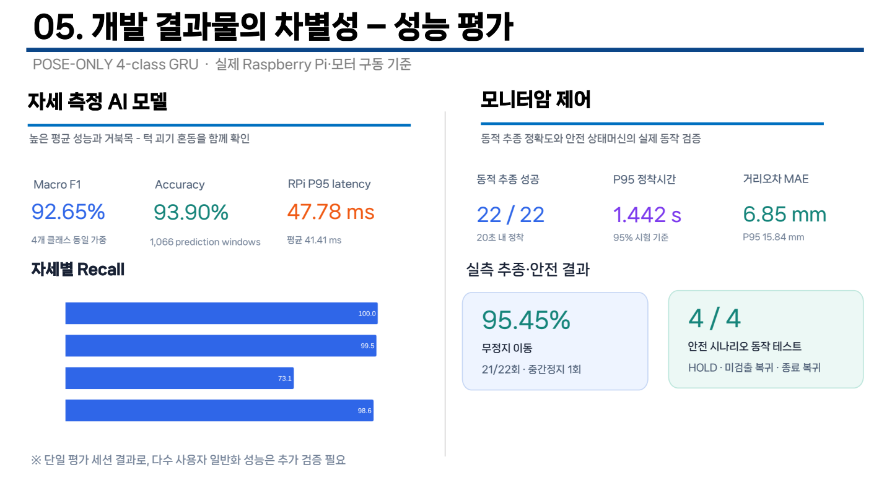

자세를 알아차리는 피드백
카메라의 자세·피로도 분석을 PyQt 화면, LED·부저와 일일 리포트로 전달하는 팀 시스템입니다.

담당 구현Arduino 펌웨어, Raspberry Pi–Arduino Serial 통신, LED·부저 알림, MPU6050 기반 카메라 수평 보정·서보 제어
Pose·Face 모델과 UI·리포트는 타 파트입니다. 데이터 수집은 공동 기여입니다.
상위 소프트웨어의 판단을 장치의 동작으로.
Arduino 펌웨어·Serial 제어에서 모터 제어 연결과 하드웨어 통합까지 다뤘습니다.
기간은 보고서에 기록된 개발 일정 기준입니다. 실제 완료·발표일과 구분합니다.
카메라의 자세·피로도 분석을 PyQt 화면, LED·부저와 일일 리포트로 전달하는 팀 시스템입니다.

Pose·Face 모델과 UI·리포트는 타 파트입니다. 데이터 수집은 공동 기여입니다.
사용자의 위치·자세와 센서 입력을 모니터 위치·수평 조절에 연결한 팀 시스템입니다. 잘못된 자세를 그대로 따라가지 않는 제어를 목표로 확장했습니다.

기존 Planner·IK·MotorService, Motor3·4 수평 제어와 모델·UI 전체는 개인 단독 구현이 아닙니다.
MPU6050 기울기 입력 → Arduino 보정 판단. 위 도식은 논리적 기능 관계이며 실제 배선도가 아닙니다.
loop()에서 줄바꿈까지 읽은 명령의 공백을 제거하고 설정·피드백·보정으로 나눕니다. SET_POSTURE_COUNT:n과 SET_DROWSY_COUNT:n은 반복 횟수를 1~10으로 제한합니다.
Serial 115200 baud는 설정값입니다. 알림 지연이나 실측 처리 성능을 뜻하지 않습니다.
blinkFeedback()은 상태에 맞는 색상·횟수·ON/OFF 시간을 받아 millis() 기준으로 두 출력을 갱신합니다. 두 출력이 끝나면 FEEDBACK_DONE을 출력하고 반환합니다.
다음 Serial 명령은 함수 반환 후 처리합니다. 알림 중 새 명령을 선점하는 구조로 설명하지 않습니다.
getRollAngle()은 MPU6050 가속도 Y·Z로 Roll을 계산합니다. autoLevelCameraOnce()에서 목표각과 비교하고 서보를 단계적으로 조정하며, 각도 제한과 최대 반복 조건으로 범위·종료를 나눕니다.
Motor12 연결 → 기존 Planner·MotorService → Motor1·2 명령
알림 연결 → 기존 PostureAlertService·BuzzerService → 부저 출력
타 파트 → Motor3·4 수평 제어 · 모델 · UI·리포트
hardware_process.py에서 위치 입력과 활성 상태를 context로 전달하고 Motor12Controller.update()에서 기존 Planner·명령 경로를 호출하도록 수정했습니다.
기본 상태 계산 20Hz·명령 5Hz는 코드 설정이며 실측 속도가 아닙니다. Recovery 전체를 신규 구현한 것은 아닙니다.
프로세스가 꺼져 있으면 설정 저장만 수행하고, 다음 시작 시 저장된 설정을 읽습니다. 설정 저장 때문에 카메라·프로세스를 새로 시작하지 않습니다.

초기 펌웨어 수정 사례이며 고도화 성과로 중복 포함하지 않습니다.
미세한 떨림·소음이 변경 기록과 코드 주석에 남아 있었습니다. 보정 성공 후에도 제어 신호가 유지되는 부분을 검토했습니다.
보정 성공 경로에 cameraServo.detach()를 추가하고 다음 보정 시작 시 필요하면 attach(SERVO_PIN)하도록 변경했습니다. 실패 경로에는 detach가 없습니다.
실제 떨림 감소와 반복 시험 결과는 확인되지 않았습니다. 제어 신호 유지가 측정으로 확정된 근본 원인은 아닙니다.
초기 명령 처리·알림·서보 신호 처리, 고도화 Motor12 조건·연결과 PyQt 설정·Pose 알림 통합을 코드에서 확인했습니다. 개별 커밋만의 정확도·안정성·지연 개선을 독립 측정한 결과는 아닙니다.
POSE-ONLY 구성, 실제 Raspberry Pi·모터 구동, 동적 추종 22회. 모터 제어·캘리브레이션·통합 담당과 관련된 팀 결과이며 개인 단독 수행 결과가 아닙니다.
20초 내 정착
정착시간 P95
거리오차 MAE
무정지 이동 · 중간정지 1회
출처: 고도화 개발완료보고서 p.15. 이번 페이지 제작에서 시험을 재현하거나 개선율을 계산하지 않았습니다.

고정 버전 링크는 확인한 변경을 가리킵니다. 실제 개발 브랜치·실물 시험 제출본과 동일함을 뜻하지 않습니다.
문서 근거: 초기 결과발표자료 pp.29–35, 고도화 개발완료보고서 pp.5–13(시스템·통합 상태), p.15(팀 시험), p.19(일정), p.20(역할 분담). 승인된 이미지 발췌를 사용하며 문서 전체·영상 원본은 공개하지 않습니다.
← 전체 포트폴리오로 돌아가기